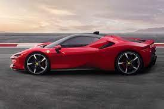
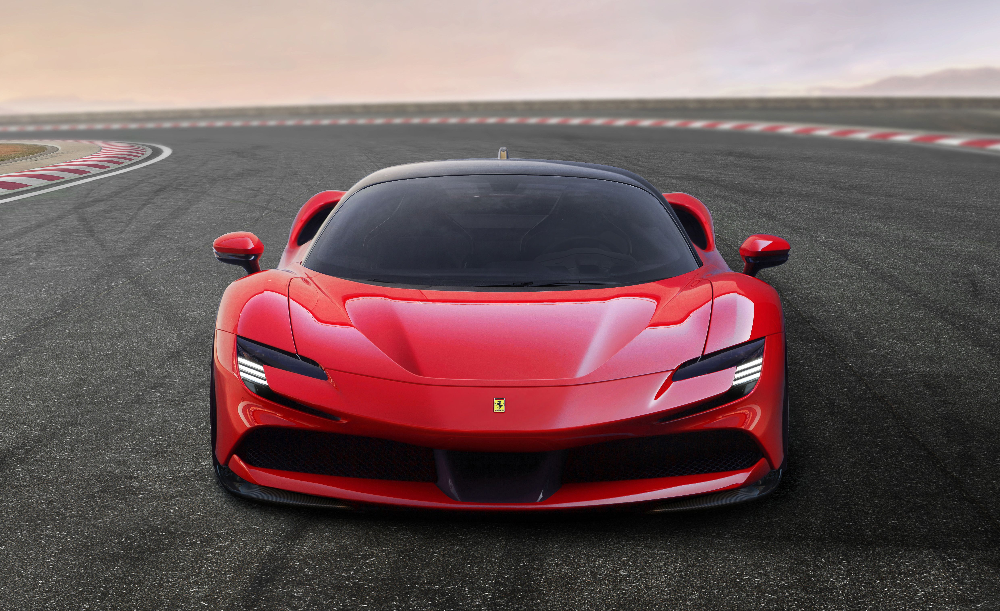
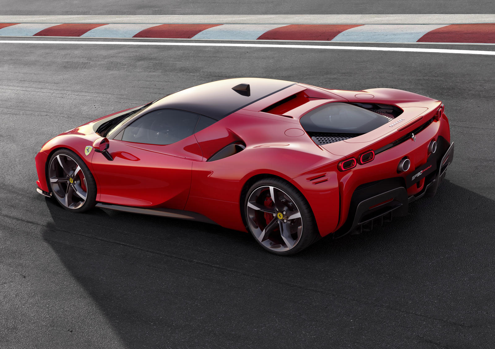
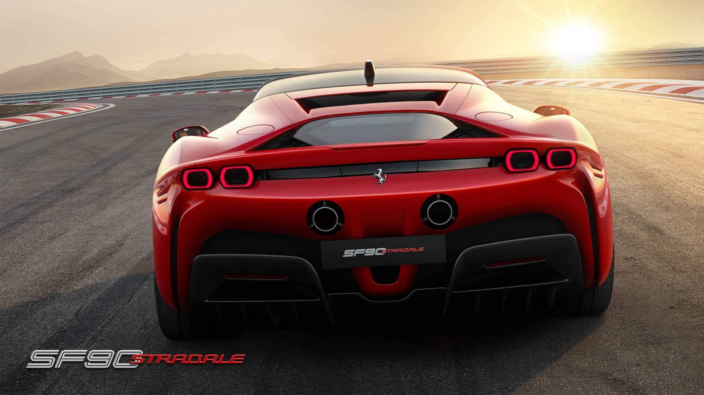
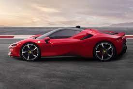
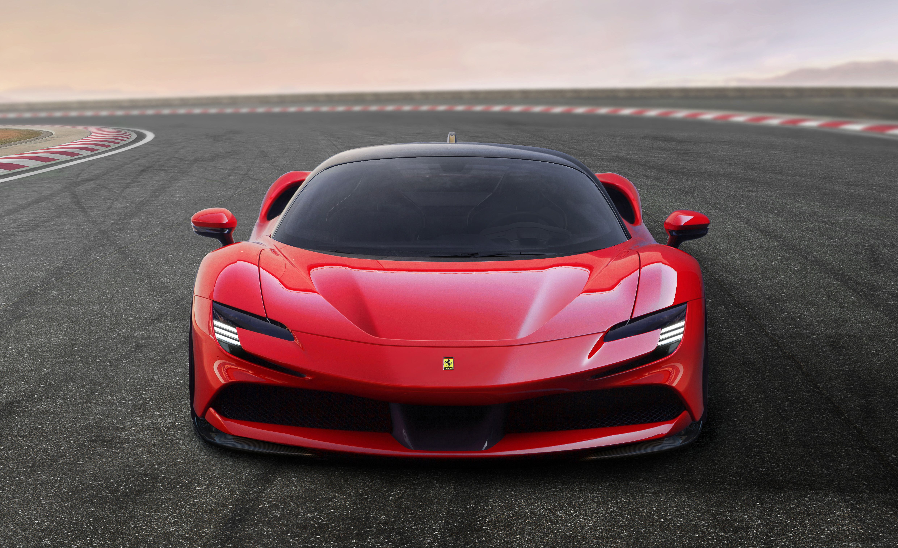
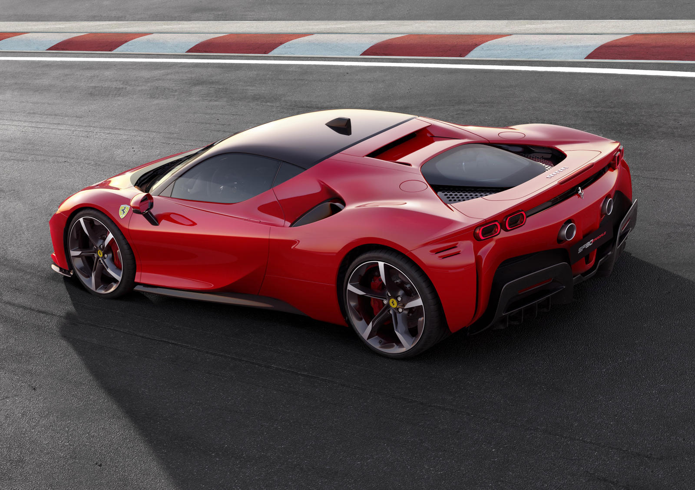
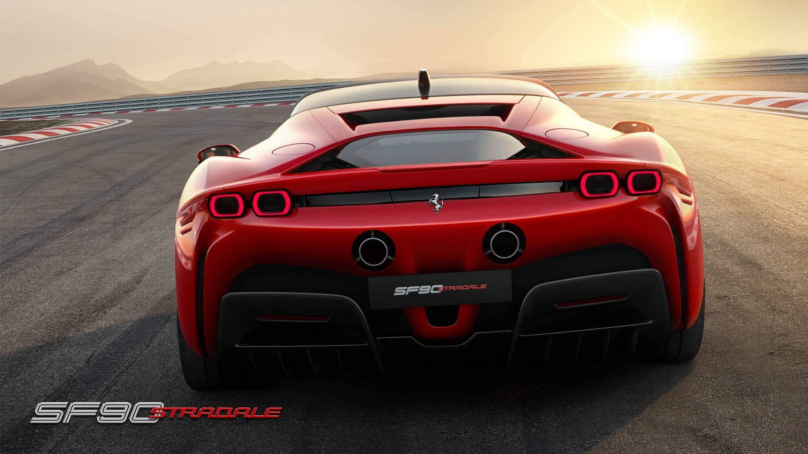
The Ferrari SF90 Stradale is a groundbreaking hybrid supercar that combines stunning design with exceptional performance. Here are the key points about the SF90 Stradale:
1)Design: The SF90 Stradale features a sleek and aerodynamic design with aggressive styling cues, a low-slung profile, and modern LED lighting.
2)Powertrain: It is equipped with a twin-turbocharged V8 engine combined with three electric motors, producing a mind-boggling total power output of 986 horsepower.
3) Performance: The SF90 Stradale accelerates from 0 to 60 mph in just 2.5 seconds and has a top speed of around 211 mph, making it one of the fastest Ferraris ever produced.
4)Hybrid System: The hybrid setup allows for all-wheel drive and provides instant torque, enhancing the car's acceleration and handling capabilities.
5)Electric Range: The SF90 Stradale offers a pure electric driving mode, allowing for emission-free and silent driving for approximately 16 miles.
6)Handling and Dynamics: With advanced technologies like electronic stability control, torque vectoring, and adaptive suspension, the SF90 Stradale delivers exceptional handling and precise control.
7)Interior: The cabin is a perfect blend of luxury and performance, featuring premium materials, comfortable seating, and a driver-focused cockpit.
8)Infotainment: It is equipped with the latest infotainment system, including a digital instrument cluster, touchscreen display, and connectivity features.
9)Track Capabilities: The SF90 Stradale is designed to excel on the track, with features such as aerodynamic enhancements, active aerodynamics, and advanced braking systems.
10)Limited Production: The SF90 Stradale is a limited-production model, showcasing Ferrari's commitment to pushing the boundaries of automotive engineering and performance.
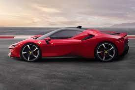
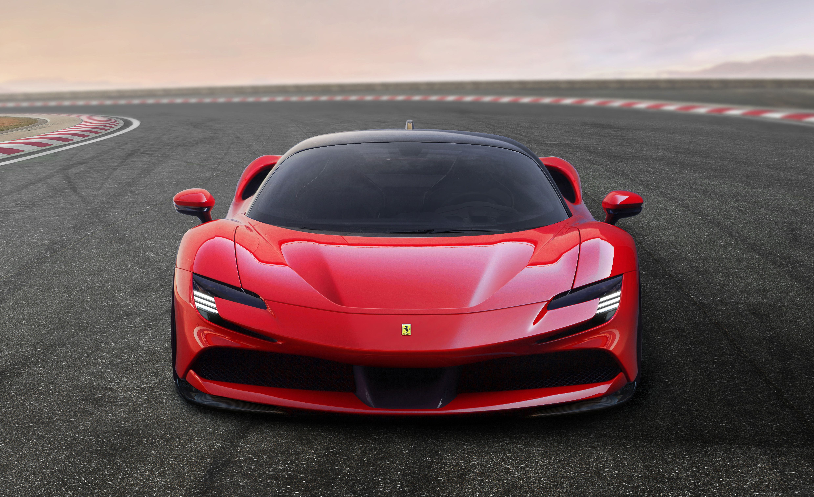
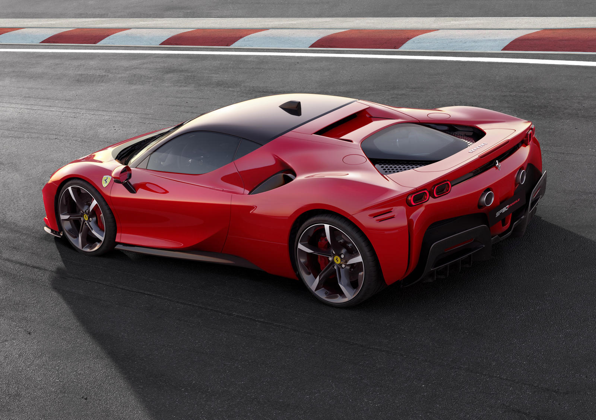
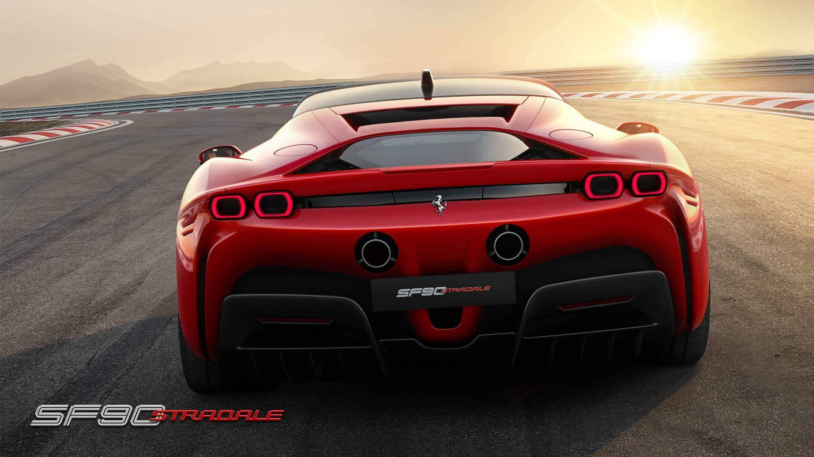